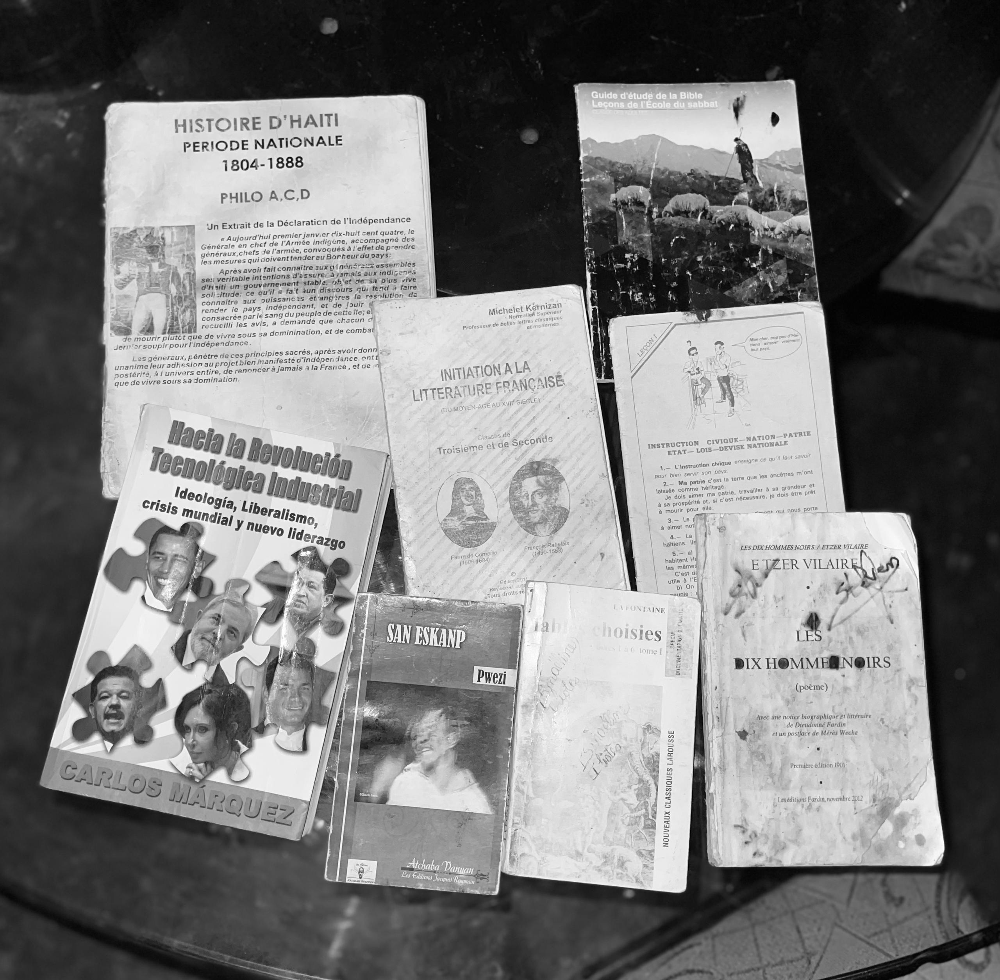
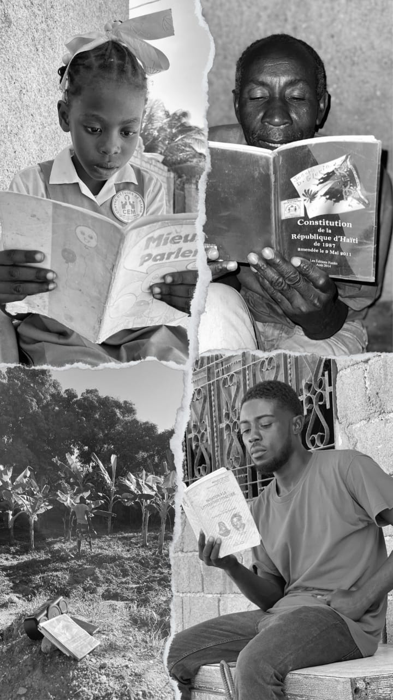
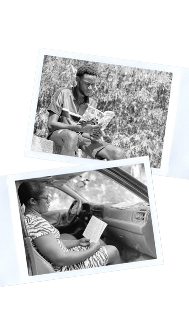
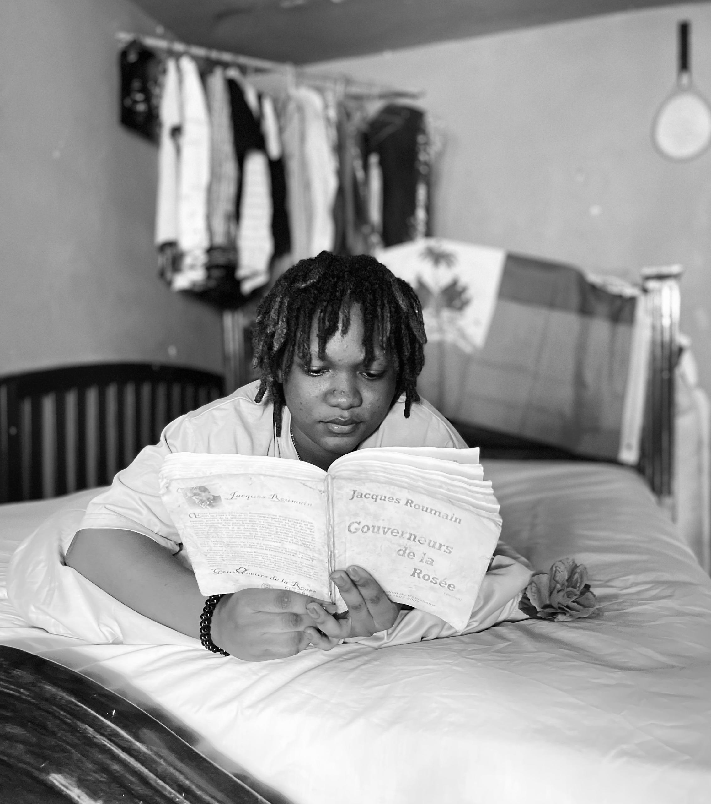
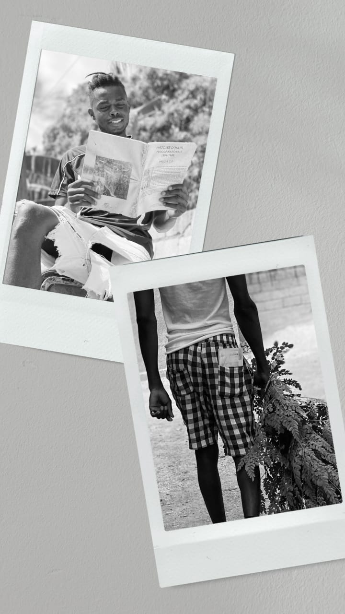
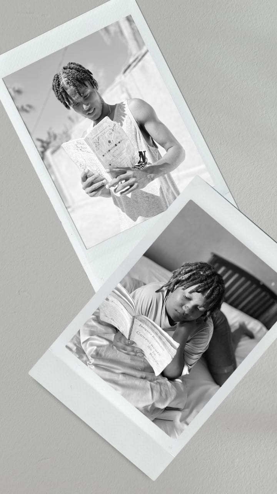
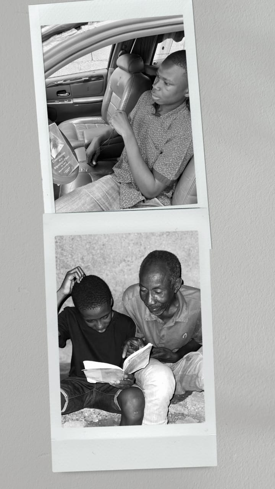
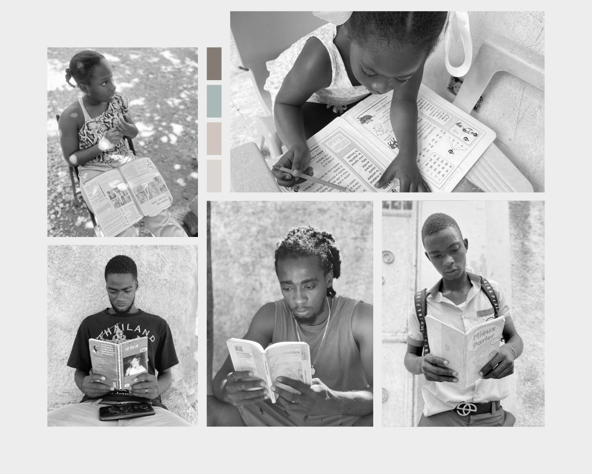
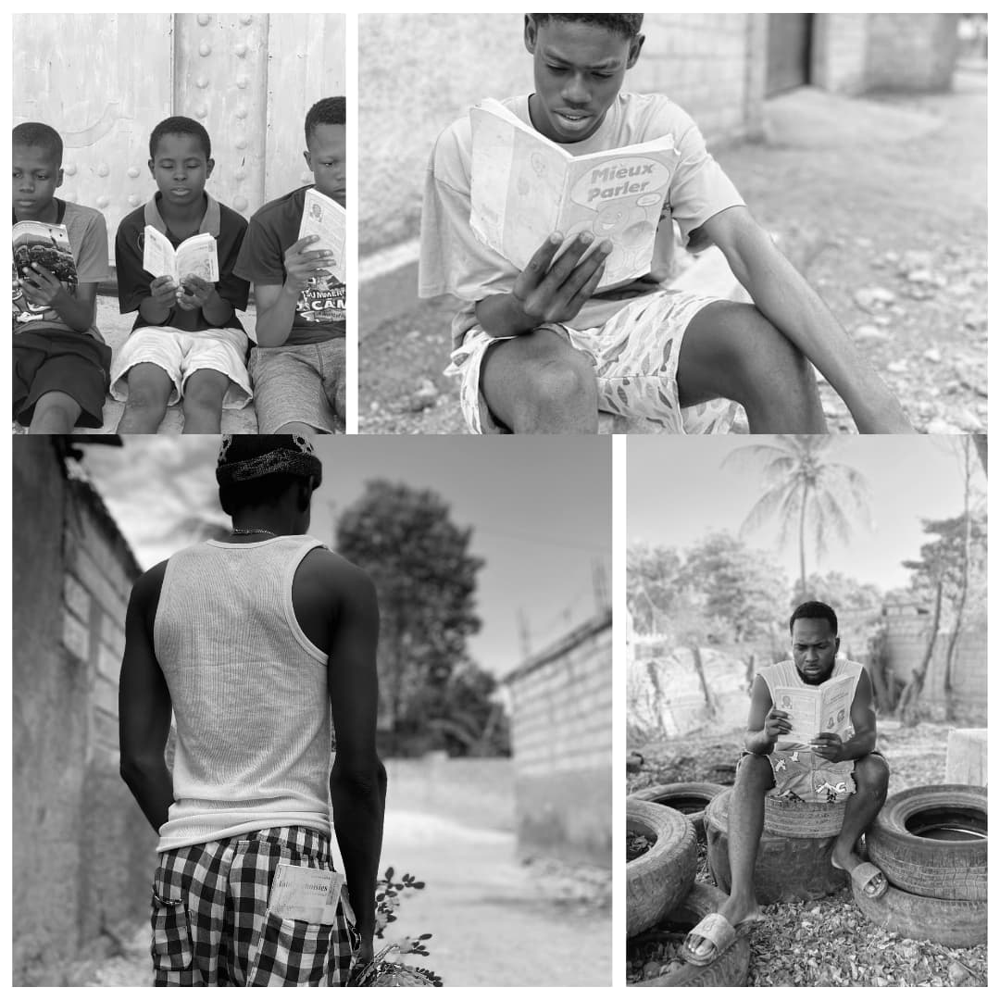

Objektif pwojè sila a se pou mete an valè enpòtans liv nan yon sosyete. lè n konstate kisa nou ka rive fè ak lekti ki byenfè liv genyen kòman moun ka enstrui tèt yo atravè moso lekti se nan optik sa a nou pat ka rete bra kwaze san soulve pwen sa pou n rive sansiblize popilasyon an sou pratik sila a k ap pèdi valè l chak jou pi plis. fas ak enpak teknolojik la jenès la vrèman neglije li, yon pratik ki vrèman meprize pou n pa di ki pa egziste ankò.

Kisa Lekti ye tout bon?
Lekti se pwosesis kote yon moun ap dekòde oswa entèprete siy ekri, tankou mo ak fraz, pou fè sans ladan yo. Li ka sèvi pou jwenn enfòmasyon, pran plezi, aprann nouvo bagay, oswa menm devlope panse ak konesans nou pou yon pi bon aprantisaj pou yon sosyete miyò.

Ki kategori moun ki dwe pratike lekti ?
Tout moun dwe pratike lekti, kèlkeswa laj, nivo edikasyon, oswa pwofesyon. Kèk kategori moun ki ta dwe mete plis enpòtans sou lekti:
Timoun ak Jèn:
Pou devlope ladrès lekti, ekriti, ak konpreyansyon
Pou ankouraje kreyativite ak imajinasyon
Etidyan:
Pou amelyore rezilta akademik yo.
Pou aprann nouvo bagay epi elaji konesans yo nan domèn espesifik
Pwofesyonèl:
Pou rete ajou ak devlopman nan sektè travay yo.
Pou amelyore konpetans yo ak devlope karyè yo.
Paran:
Pou sèvi kòm modèl pou timoun yo.
Pou jwenn enfòmasyon sou teknik edikasyon ak devlopman timoun.
Gran Moun:
Pou kenbe lespri yo aktif ak an sante..
Pou kontinye aprann pandan tout lavi yo

Ki byenfè sa gen ladann lè moun ap li ?
Lè yon moun ap li, li jwenn anpil byenfè ki itil nan tout aspè lavi li. Men kèk nan benefis prensipal yo:
Amelyore Konesans:
Li ede w aprann nouvo bagay sou diferan sijè, tankou syans, istwa, kilti, ak teknolo
Pou ankouraje kreyativite ak imajinasyon
Devlopman Mantal:
Li redui risk maladi tankou Alzheimer ak lòt maladi mantal
Li fè sèvo a travay, sa ki amelyore memwa, konsantrasyon, ak kapasite refleksyon.
Rediksyon Estrès:
Lè w ap li yon liv ki enteresan, sa ka detann w epi ede w bliye pwoblèm w.
Istwa enspire oswa motivasyon ka ranpli w ak kouraj ak lapè
Amelyore Ladrès Kominikasyon:
Li ede w ekri ak eksprime w pi byen.
Ou aprann diferan fason pou kominike avèk moun ki gen lòt kwayans oswa eksperyans
Ouvèti Espirityèl ak Imajinasyon:
Li fè ou dekouvri nouvo mond ak pèspektiv.
Li ede w devlope kreyativite ak kapasite pou rezoud pwoblèm.
Pwogrè Akademik ak Pwofesyonèl:
Ou aprann teknik ki ka ede w nan etid ou oswa travay ou.
Li ede w devlope kreyativite ak kapasite pou rezoud pwoblèm.

Èske gen yon andwa (zòn) espesifik pou moun fè lekti ?
Bibliyotèk:
Trankilite ak disiplin.
Aksè a anpil liv ak lòt resous.
ede w konsantre epi evite distraksyon.
Kay ou:
Ou ka kreye yon espas lekti pèsonèl, tankou yon chanm oswa yon kwen ak chèz konfòtab.
Pi fleksib, ou ka li nenpòt lè ou vle.
Jaden oswa Pak Piblik:
LNatirèl, lapè, ak lè fre.
Anviwònman ideyal pou moun ki renmen li deyò nan yon kote rilaks.
Legliz, Tanp, oswa Espas Espirityèl ak Pandan Vwayaj (Avyon, Bus ...):
Li fè tan pase pi rapid pandan yon vwayaj long.
Trankilite pou lekti meditatif oswa espirityèl.
An verite pi bon andwa lekti a se yon kote ki adapte ak bezwen pèsonèl ou, kèlkeswa si w ap chèche trankilite oswa yon ti mouvman pandan w ap li.

Ki chanjman ki ka pote nan yon sosyete atravè lekti ?
Lekti gen yon pouvwa ekstraòdinè pou chanje sosyete, paske li ede moun devlope konpreyansyon, konesans, ak yon vizyon ki pi laj sou lavi. kèk nan chanjman pozitif ke lekti ka pote nan yon sosyete:
Lektiti amelyore edikasyon
diminye prejije
ogmante konsyans sosyal
epi ankouraje kreyativite ak inovasyon
Li kontribye nan yon sosyete ki pi pèpòz
diminye krim
fòme lidè efikas
epi ranfòse relasyon fanmi ak kominote
Yon sosyete kote moun li anpil se yon sosyete ki pi edike, konsyan, e ki gen yon fondasyon solid pou chanjman dirab. Lekti ka tounen yon zouti pou transfòme lavi moun ak kominote yo.

Èske fè lekti ka vin yon pasyon pou on moun ?
Wi, fè lekti ka definitivman vin yon pasyon pou yon moun, menm si li pa t renmen li anvan. Men kèk rezon ak fason sa ka fèt:
Li satisfè konesans ak koutwazi
Li ofri yon fòm echap
Dekouvèt liv motivasyonèl ak edikatif
Pasyon ka devlope gras ak woutin
Anviwònman ki ankouraje lekti
Koneksyon emosyonèl
Kouman Yon Moun Ka Devlope Pasyon Pou Lekti
Kòmanse ak sijè ki enterese w: Chèche liv ki konekte ak sa ou renmen.
Li piti piti: Kòmanse ak atik kout, nouvèl, oswa chapit senp.
Eksplore diferan estil: Eseye woman, powèm, liv devlopman pèsonèl, elatriye.
Pataje lekti w: Diskite sou liv ou li oswa rantre nan yon gwoup lekti.
Yon sosyete kote moun li anpil se yon sosyete ki pi edike, konsyan, e ki gen yon fondasyon solid pou chanjman dirab.
Lekti ka tounen yon zouti pou transfòme lavi moun ak kominote yo.

Kisa ki koz yon moun pa renmen li ?
Gen plizyè rezon ki ka fè yon moun pa renmen li. Sa ka soti nan eksperyans pèsonèl, faktè anviwònman, oswa difikilte espesifik yo genyen. Men kèk nan kòz prensipal yo:
Difikilte ak lekti (ladrès)
Move eksperyans lekti
Pa jwenn liv ki enteresan
Enpak teknoloji ak distraksyon
Mank konsantrasyon oswa pasyans
Pwoblèm anviwònman
Kwayans ke lekti se yon obligasyon
Pwoblèm sante fizik
Ki Jan Pou Ede Yon Moun Renmen Lekti
Ankouraje yo kòmanse ak sijè yo renmen oswa kontni ki kout ak enteresan.
Fè lekti tounen yon aktivite amizan epi san presyon.
Kreye yon anviwònman ki ankouraje lekti, tankou mete liv fasilman disponib.
Ede yo idantifye ak adrese nenpòt difikilte teknik oswa sante ki ka fè lekti difisil.
Lekti pa ta dwe yon fado, men pito yon eksperyans ki pote konesans, plezi, ak devlopman pèsonèl.
Avèk bon ankadreman ak metòd, nenpòt moun ka aprann apresye lekti epi fè li tounen yon pati natirèl nan lavi yo.

Kisa ki ka rive yon moun ki pratike lekti anpil ?
Yon moun ki pratike lekti anpil ka wè anpil chanjman pozitif nan lavi li, depi sou nivo pèsonèl li rive nan relasyon li ak sosyete a. Men sa ki ka rive yon moun ki pratike lekti anpil:
Amelyorasyon nan konpetans entelektyèl
Amelyorasyon mantal ak sikolojik
Devlopman pèsonèl
Enpak sou sante fizik ak mantal
Benefis Espesifik
Konesans Pwondè: Lekti elaji konpreyansyon sou divès domèn tankou istwa, syans, ak teknoloji.
Vokabilè Avanse: Li regilyèman ede moun aprann nouvo mo epi eksprime tèt yo pi byen.
Rediksyon Estrès: Li yon liv ka ede detann lespri epi diminye enkyetid.
Memwa Fò: Lekti antrene sèvo a, sa amelyore memwa ak konsantrasyon.
Motivasyon ak Enspirasyon: Liv motivasyonèl ede moun mete objektif ak pouswiv rèv yo.
Lekti se yon zouti pwisan ki pa sèlman elaji konesans, men li tou amelyore sante mantal ak devlopman pèsonèl.
Li chak jou ka mennen nan yon vi ki pi rich, pi balanse, epi pi satisfè.

Èske reyèlman yon moun ki li anpil ka rive pèdi tèt li (Fou)?
An reyalite, li anpil pa lakòz moun pèdi tèt li oswa vin fou. Okontrè, li gen anpil benefis pou devlopman mantal ak emosyonèl yon moun, kòm li ankouraje refleksyon, konesans, ak konsyans tèt ou. Sepandan, gen kèk sitiyasyon ra oswa kondisyon ki ka fè sa parèt posib, men yo pa dirèkteman lye ak lekti, men pito ak lòt faktè. Men kèk aspè pou eksplike sa:
Twòp lekti san balanse (fatig mantal)
Lekti izole san entèraksyon sosyal
Twoub mantal ki egziste deja
Risk Potansyèl
Fatig mantal: Twòp lekti san repo ka mennen nan konfizyon, estrès, oswa difikilte pou konsantre.
Izolasyon sosyal: Lekti san entèraksyon ak lòt moun ka afekte sante emosyonèl.
Enpak sou twoub mantal: Moun ki gen maladi mantal ka reponn twò emosyonèlman a kontni liv yo.
Fason Pou Evite Twoub Mantal Pandan Lekti
Varye tip liv: Balans ant liv ki difisil ak liv ki amizan oswa rilaks.
Pran poz: Pa fè lekti yon aktivite san limit; pran tan pou detann epi angaje nan lòt aktivite.
Chwazi sijè apwopriye: Li liv ki matche ak nivo emosyonèl ou ak enterè ou.
Balans ak sosyalizasyon: Pataje sa ou li ak lòt moun oswa reyini ak zanmi pou evite izolasyon.
Lekti se yon aktivite benefik, men li bezwen balans ak lòt aspè lavi pou evite efè negatif potansyèl li yo.
Lè w jere tan ak kontni lekti w byen, w ap jwenn pi bon eksperyans san okenn efè endezirab.